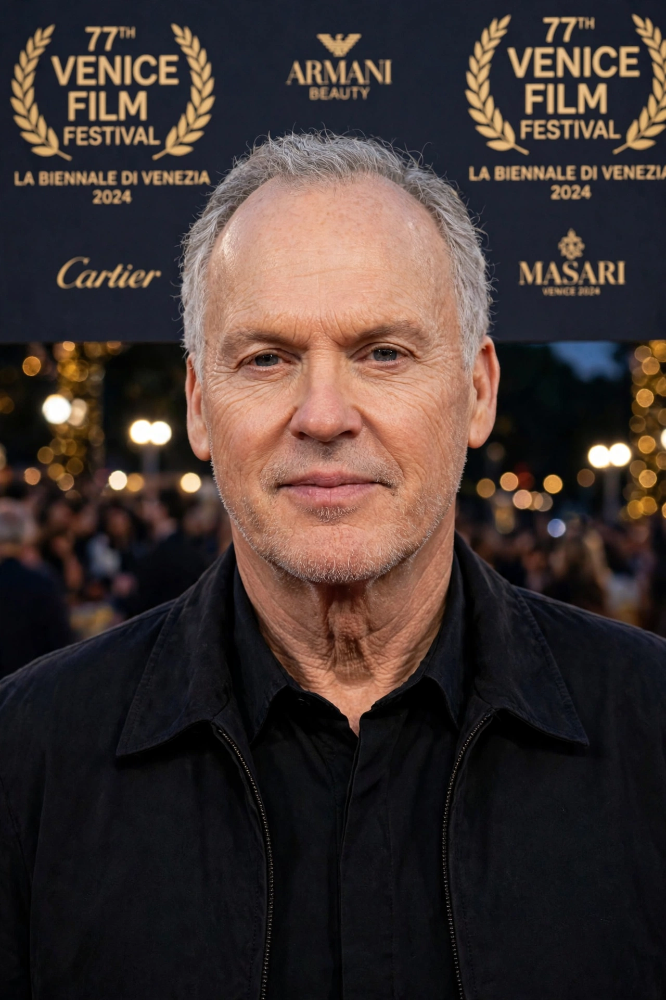

| Born | Michael John Douglas, 5 September 1951, Kennedy Township, Pennsylvania, U.S. |
|---|---|
| Occupation | Actor |
| Years active | 1975–present |
| Notable roles | Batman/Bruce Wayne, Beetlejuice, Riggan Thomson (Birdman) |
Michael Keaton (born Michael John Douglas; 5 September 1951) is an American actor. He first gained fame as a comic performer in Night Shift (1982) and Mr. Mom (1983), then starred as the title character in Tim Burton's Beetlejuice (1988) and as Batman in Burton's Batman (1989) and Batman Returns (1992) — a casting initially controversial with fans that is now widely praised.
Keaton was born in Kennedy Township, Pennsylvania, the youngest of seven children, and raised in McKees Rocks. He studied speech at Kent State University and worked in Pittsburgh television, appearing in children's programming, before moving into stand-up comedy and then to Los Angeles.
Because another actor, Michael Douglas, was registered with the Screen Actors Guild under his birth name, he adopted the surname Keaton. His film breakthrough came with Ron Howard's Night Shift (1982). Through the 1980s he mixed comedy (Johnny Dangerously, Gung Ho) with serious drama (Clean and Sober, 1988).
After a quieter period in the 1990s and 2000s — including voicing Ken in Toy Story 3 — Keaton's career resurged with Birdman (2014), in which he played a washed-up superhero actor staging a Broadway play; the role won him a Golden Globe and an Academy Award nomination. He followed with the ensemble drama Spotlight (2015), The Founder (2016), the Vulture in Spider-Man: Homecoming (2017), and an Emmy-winning turn in the opioid-crisis miniseries Dopesick (2021). He reprised Batman in The Flash (2023) and Beetlejuice in Beetlejuice Beetlejuice (2024).
From Wikipedia, the free encyclopedia. Recreated article.